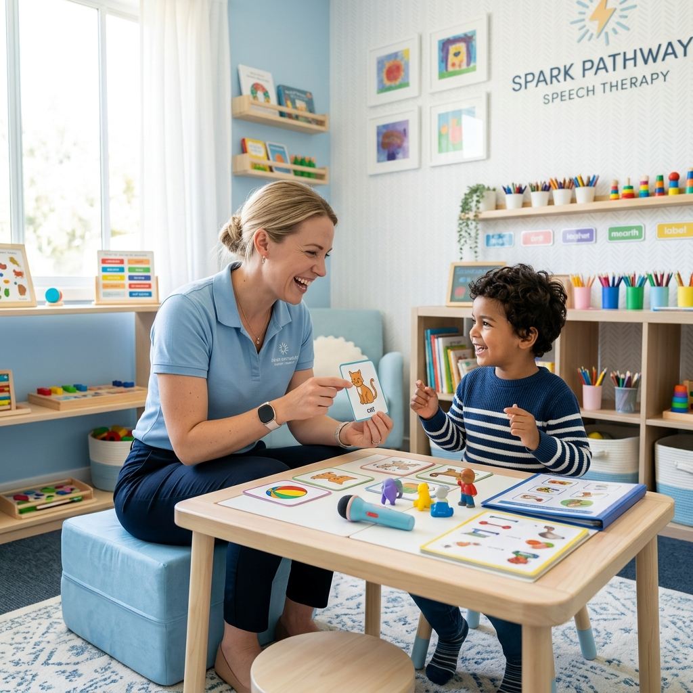

Cuidado especializado para a sua voz e audição
Comunique-se com
confiança
e tranquilidade
Transformamos vidas através do cuidado com a fala, linguagem, voz e audição. Bem-estar pleno para todas as idades num ambiente acolhedor e humanizado.
Aprovado por mais de 1k+ pacientes satisfeitos
